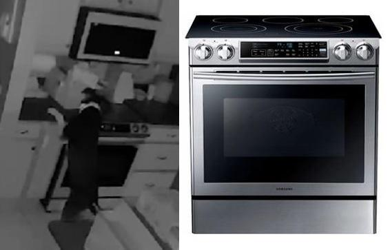

韩国家用电器品牌三星（Samsung）周四（8日）宣布，召回一系列型号的电煮食炉，并警告称炉上的旋钮曾多次发生因为宠物或人类意外触碰而启动，有引起火警的风险。
该召回公告称，自2013年以来，三星收到了300多宗宠物或人类意外启动电炉的报告，导致约250宗火警。其中至少有18宗造成了“广泛的”物业损失，还有40宗导致受伤，其中8宗有伤者需要接受医疗，另有7宗导致宠物丧生。
一些用家分享的短片显示，宠物会触碰到炉上的旋钮而引发火警。今年6月，美国科罗拉多州的一只狗就是因为这样而引发了一场房屋大火。
美国消费品安全委员会（Consumer Product Safety Commission，简称CPSC）表示，约有110万台电炉受影响，委员会正就此展开调查。
三星将为这些2013年至2024年间售出的电煮食炉提供免费的旋钮更换。所有受影响型号详列于以下的CPSC官网。
图：CPSC
V20